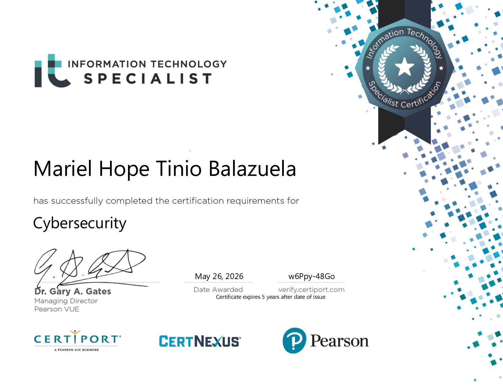

OJT Experience
Developed responsive web applications using HTML, CSS, JavaScript, Java, Bootstrap, Spring MVC, and SQL, while applying Object-Oriented Programming and DRY principles to maintain a clean, efficient codebase. Designed Entity-Relationship Diagrams (ERDs) in MySQL Workbench to map complex database architectures, and presented progress during technical code reviews while collaborating closely with the team. Completed a 400-hour internship, finished supplementary training in professional communication and soft skills, and earned recognition from peers as proactive, helpful, and a strong support to the team leader.
Education
Specialization in Intelligent Systems. Graduated as Magna Cum Laude.
Awards
Leadership & Involvement
Guided fellow Computer Science students in enhancing technical skills through targeted leadership programs.
Authored news articles and managed college-wide social media content. CCS Service Awardee.
Certifications
